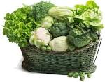
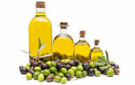
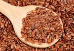
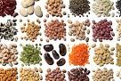
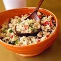
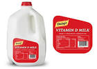
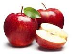
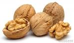
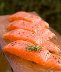

Foods to Boost Your Health
| Leafy Greens |
Olive Oil |
Flax Seeds |
Oat Meal |
Green Tea |
 Legumes |
 Quinoa |
 D-Milk |
 Apples |
 Walnuts |
 Salmon |
Berries |
Eggs |
Oranges |
"Dont dig your grave with your own knife and fork"
Easy Tips for Planning a Healthy Diet:
- Fill up on colorful fruits and vegetables
- Eat more healthy carbs and whole grains
- Enjoy healthy fats and avoid unhealthy fats
- Reduce sugar and salt
- Add calcium for bone health
- Bulk up on fiber
Learn your recommended daily amounts
Recommended Daily Amounts
| Fruits and vegetables | At least five ½ cup servings |
| Calcium | 1,000mg or 1,200mg if over 50 |
| Fiber | 21g to 38g |
| Protein | 0.8g to 1.5g of high-quality protein per kilogram (2.2lb) of body weight |
| Saturated fat | No more than 16g |
| Trans fat | No more than 2g |
| Sugar | Keep calories from added sugars under 100 (24g or 6 teaspoons) for women and under 150 (36g or 9 teaspoons) for men |
| Sodium | No more than 1,500 to 2,300 mg (one teaspoon of salt) |
For more healthy foods and tips please visit World's Healthiest Foods